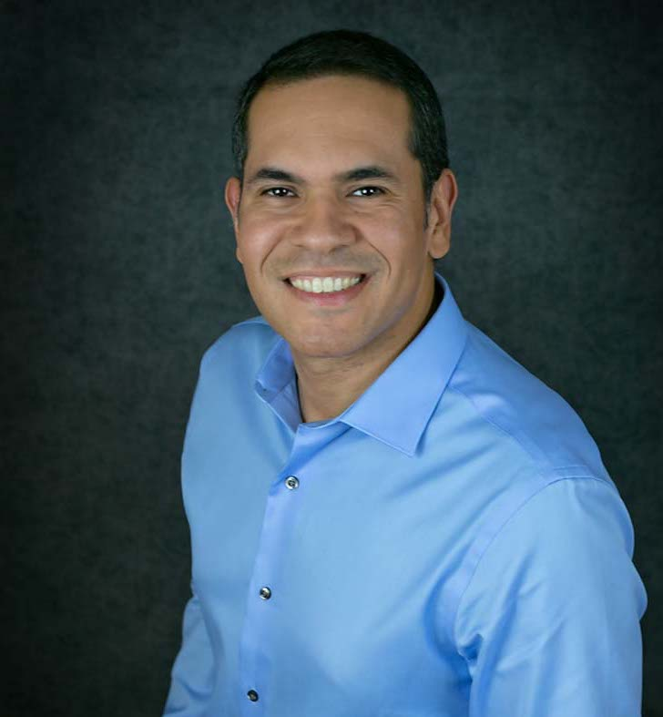

|  |
Contact: Lawrence Livermore National Laboratory, Box 808, L-561 Livermore, CA 94551-0808 Phone: +1-925-422-7308, Email: ilaguna@llnl.gov |
News
09-22-2020: We won the best paper award at IWOMP’20
08-26-2020: Two papers accepted at SC’20
01-18-2020: Paper accepted at IPDPS’20
11-19-2019: We presented our MPI survey paper at SC’19
06-18-2019: We won the Hans Meuer Award for best research paper at ISC’19
03-20-2019: Nominated for best paper (the Hans Meuer Award) at ISC’19
03-18-2019: Paper accepted at HPDC’19
12-11-2018: I have been named Better Scientific Software (BSSw) Fellow 2019
12-11-2018: Paper accepted at IPDPS’19
09-18-2018: Our SC’18 resilience paper is highlighted in the news at HPCWire
09-17-2018: Invited talk at School of Computing Colloquium, University of Utah
08-14-2018: Paper accepted at SC’18
09-09-2017: We are named R&D 100 Award Finalists!
06-15-2017: Paper accepted at SC’17
Research Interests
I am a Computer Scientist at the Center for Applied Scientific Computing (CASC) at the Lawrence Livermore National Laboratory (LLNL), California. My main area of research is high-performance computing (HPC). My main sub-area of research in HPC is programing models and systems.
Specific research interests:
- Software reliability, debugging, correctness, floating-point analysis
- Compiler instrumentation (LLVM), static analysis, program analysis
- Fault tolerance, resilience, error data analysis
- Scalable machine learning, statistical analysis
Select Publications
-
[PPoPP’19] Daniel DeFreez, Antara Bhowmick, Ignacio Laguna, Cindy Rubio-González. Detecting and Reproducing Error-Code Propagation Bugs in MPI Implementations. ACM Principles and Practice of Parallel Programming (PPoPP), San Diego, Feb 22-26, 2020.
-
[HPDC’19] Michael Bentley, Ian Briggs, Ganesh Gopalakrishnan,Dong H. Ahn, Ignacio Laguna, Gregory L. Lee, Holger E. Jones. Multi-level Analysis of Compiler-Induced Variability and Performance Tradeoffs. International Symposium on High-Performance Parallel and Distributed Computing (HPDC), Phoenix, Arizona, USA - June 24-28, 2019.
-
[SC’18] Luanzheng Guo, Dong Li, Ignacio Laguna, Martin Schulz. FlipTracker: Understanding Natural Error Resilience in HPC Applications. ACM/IEEE Conference for High Performance Computing, Networking, Storage and Analysis (SC), 2018.
-
[SC’17] Giorgis Georgakoudis, Ignacio Laguna, Dimitrios S. Nikolopoulos, Martin Schulz. REFINE: Realistic Fault Injection via Compiler-Based Instrumentation for Accuracy, Portability and Speed. ACM/IEEE Conference for High Performance Computing, Networking, Storage and Analysis (SC), 2017.
-
[PLDI’14] Subrata Mitra, Ignacio Laguna, Dong H. Ahn, Saurabh Bagchi, Martin Schulz, and Todd Gamblin. Accurate Application Progress Analysis for Large-Scale Parallel Debugging. ACM International Symposium on Programming Language Design and Implementation (PLDI), 2014.
-
[DSN’12] Greg Bronevetsky, Ignacio Laguna, Saurabh Bagchi and Bronis R. de Supinski. Automatic Fault Characterization via Abnormality-Enhanced Classification. In IEEE/IFIP International Conference on Dependable Systems and Networks (DSN), 2012.
-
[DSN’10] Greg Bronevetsky, Ignacio Laguna, Surabh Bagchi, Bronis R. de Supinski, Dong H. Ahn, Martin Schulz. AutomaDeD: Automata-Based Debugging for Dissimilar Parallel Tasks. IEEE/IFIP International Conference on Dependable Systems and Networks (DSN), 2010.
Professional Activities
2020 - Program Committees: SC’20, Cluster’20
2019 - Program Committees: IPDPS’19, Cluster’19,
Resilience’19
2018 - Program Committees: IPDPS’18,
Resilience’18,
SELSE’18,
Scala’18,
2017 - Program Committees: CCGrid’17,
SRDS’17,
Resilience’17,
Scala’17,
SELSE’17
2016 - Program Committees: SC’16,
SRDS’16,
CCGrid’16,
Resilience’16,
Scala’16,
SELSE’16
2015 - Program Committees: Resilience’15
2014 - Program Committees: ISSRE’14,
PROPER’14
2020 - Workshop Co-Organizer: Workshop on Program Synthesis for Scientific Computing (PSW)
2020 - Workshop Co-Organizer: Correctness’20
2019 - Workshop Co-Organizer: Correctness’19
2018 - Workshop Co-Organizer: Correctness’18
2017 - Workshop Co-Organizer: Correctness’17